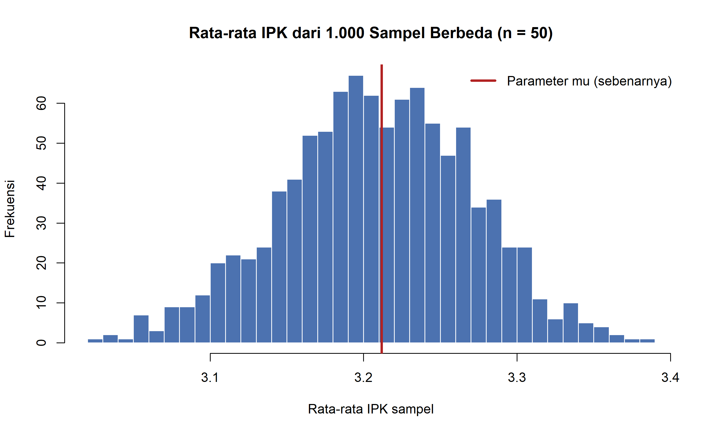
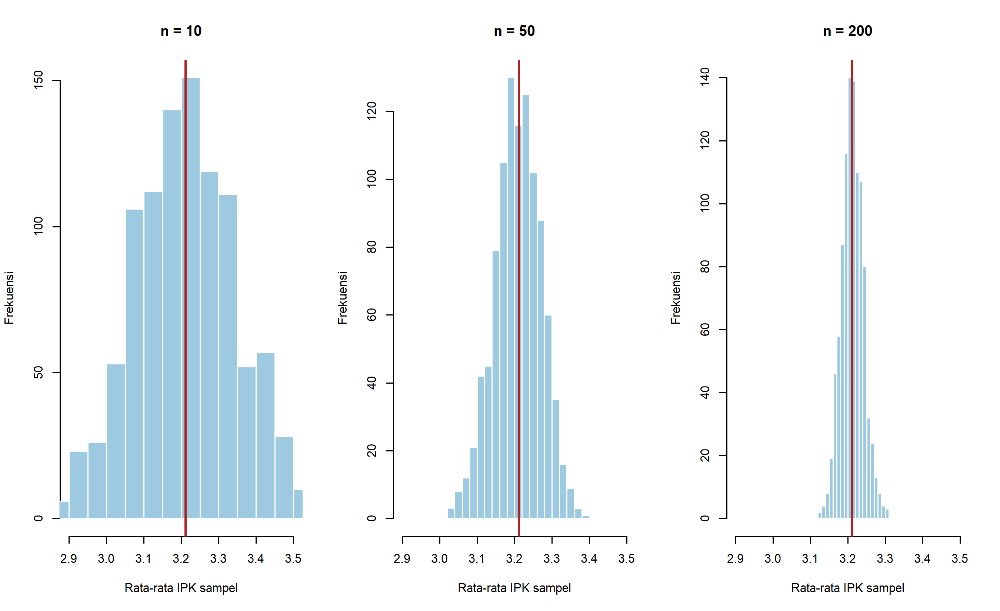
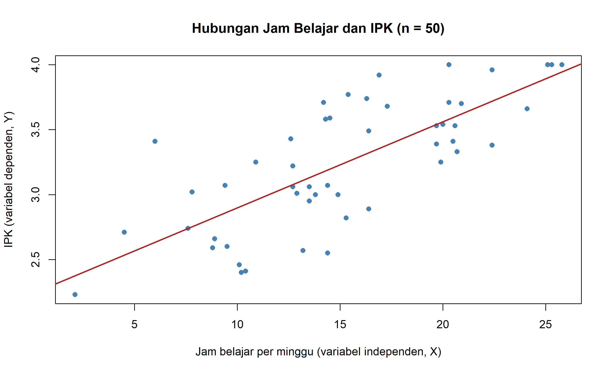
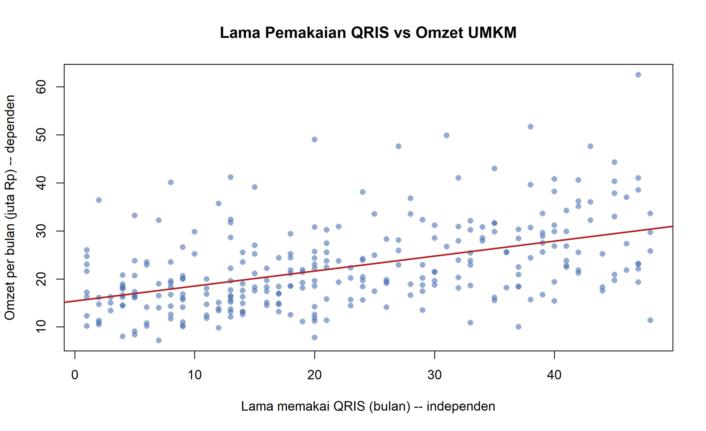
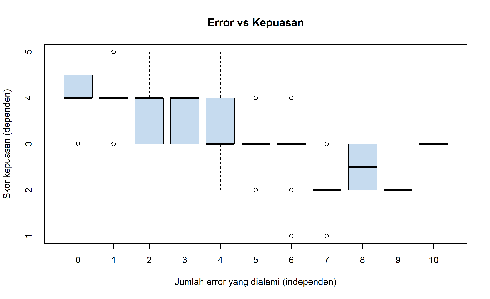
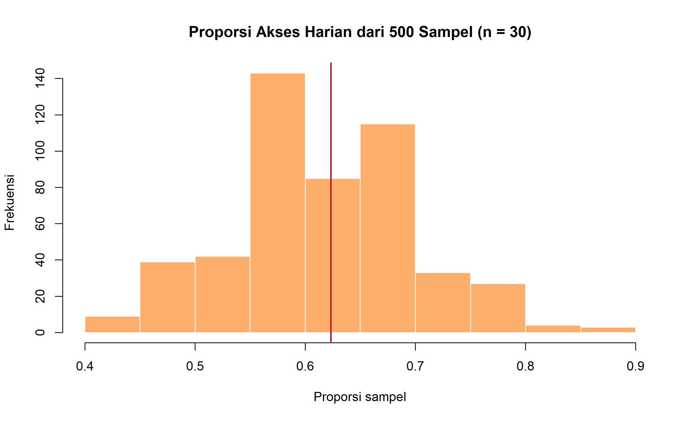

tinggi <- c(160, 172, 168, 155, 181) # numerik
prodi <- c("DS", "SI", "DS", "TI", "DS") # karakter (teks)
lulus <- c(TRUE, TRUE, FALSE, TRUE, TRUE) # logika
length(tinggi) # banyaknya elemen[1] 5Sepanjang semester kita memakai R sebagai “kalkulator statistika”. Bagian ini hanya membekali perintah minimal yang dibutuhkan pada pertemuan ini.
Vektor dibuat dengan fungsi c() (combine). Satu vektor biasanya mewakili satu variabel.
tinggi <- c(160, 172, 168, 155, 181) # numerik
prodi <- c("DS", "SI", "DS", "TI", "DS") # karakter (teks)
lulus <- c(TRUE, TRUE, FALSE, TRUE, TRUE) # logika
length(tinggi) # banyaknya elemen[1] 5tinggi[2] # elemen ke-2[1] 172tinggi * 0.01 # operasi berlaku untuk setiap elemen (cm -> m)[1] 1.60 1.72 1.68 1.55 1.81class(tinggi); class(prodi); class(lulus)[1] "numeric"[1] "character"[1] "logical"Data frame adalah tabel: baris = observasi, kolom = variabel. Inilah bentuk data yang paling sering kita jumpai.
mhs_kecil <- data.frame(
nama = c("Ayu", "Budi", "Citra", "Dedi", "Eka"),
prodi = prodi,
tinggi = tinggi,
lulus = lulus
)
mhs_kecil nama prodi tinggi lulus
1 Ayu DS 160 TRUE
2 Budi SI 172 TRUE
3 Citra DS 168 FALSE
4 Dedi TI 155 TRUE
5 Eka DS 181 TRUEnrow(mhs_kecil); ncol(mhs_kecil) # banyaknya baris dan kolom[1] 5[1] 4mhs_kecil$tinggi # mengambil satu kolom dengan $[1] 160 172 168 155 181str(mhs_kecil) # struktur: nama kolom, tipe, contoh isi'data.frame': 5 obs. of 4 variables:
$ nama : chr "Ayu" "Budi" "Citra" "Dedi" ...
$ prodi : chr "DS" "SI" "DS" "TI" ...
$ tinggi: num 160 172 168 155 181
$ lulus : logi TRUE TRUE FALSE TRUE TRUEFungsi str() akan sering kita pakai untuk “berkenalan” dengan dataset baru: berapa observasinya, apa saja variabelnya, dan apa tipenya.
Dua kata ini mirip tetapi maknanya berbeda:
| Istilah | Makna | Contoh |
|---|---|---|
| Statistika (statistics sebagai ilmu) | Ilmu tentang cara mengumpulkan, mengolah, menyajikan, menganalisis, dan menginterpretasikan data untuk menarik kesimpulan dalam kondisi ketidakpastian | “Saya sedang belajar statistika.” |
| Statistik (a statistic) | Nilai ringkasan yang dihitung dari data sampel | “Rata-rata tinggi 5 mahasiswa tadi adalah 167,2 cm.” |
Dalam bahasa sehari-hari, “statistik” juga sering berarti “kumpulan angka” (misalnya “statistik pengangguran”). Dalam kuliah ini kita memakai makna teknisnya: nilai yang dihitung dari sampel.
mean(mhs_kecil$tinggi) # sebuah statistik: rata-rata sampel[1] 167.2mean(mhs_kecil$lulus) # sebuah statistik: proporsi lulus (TRUE dihitung 1)[1] 0.8Statistika bukan sekadar menghitung rumus. Ia adalah sebuah siklus:
| Tahap | Pertanyaan yang dijawab | Dibahas pada |
|---|---|---|
| 1. Merumuskan masalah | Apa yang ingin diketahui? Tentang siapa? |
Pertemuan 1 |
| 2. Mengumpulkan data | Bagaimana data diperoleh? Siapa yang diamati? |
Pertemuan 2–3 |
| 3. Menyajikan & meringkas | Seperti apa pola datanya? | Pertemuan 4–7 |
| 4. Menarik kesimpulan | Apa yang bisa dikatakan tentang populasi? | Pertemuan 9–15 |
| 5. Mengomunikasikan | Bagaimana melaporkan hasil secara jujur? | Sepanjang semester |
| Aspek | Statistika Deskriptif | Statistika Inferensial |
|---|---|---|
| Tujuan | Meringkas dan menggambarkan data yang ada di tangan | Menarik kesimpulan tentang populasi berdasarkan sampel |
| Cakupan kesimpulan | Hanya berlaku untuk data yang diamati | Digeneralisasi ke kelompok yang lebih besar |
| Alat | Tabel, grafik, mean, median, simpangan baku | Estimasi, selang kepercayaan, uji hipotesis, regresi |
| Ketidakpastian | Tidak dinyatakan | Selalu dinyatakan (misalnya margin of error, p-value) |
| Contoh kalimat | “Rata-rata IPK 50 mahasiswa yang disurvei adalah 3,21.” | “Rata-rata IPK seluruh mahasiswa diperkirakan antara 3,13 dan 3,29 (kepercayaan 95%).” |
Perhatikan perbedaan kalimatnya: kalimat deskriptif hanya melaporkan, sedangkan kalimat inferensial menggeneralisasi dan menyebutkan ketidakpastian. Pada paruh pertama semester (Pertemuan 1–7) kita fokus pada statistika deskriptif; paruh kedua (Pertemuan 9–15) pada inferensial.
| Istilah | Definisi | Contoh (Survei Kebiasaan Belajar) |
|---|---|---|
| Populasi | Seluruh objek/individu yang menjadi sasaran kesimpulan | Seluruh 5.000 mahasiswa aktif sebuah universitas |
| Sampel | Sebagian populasi yang benar-benar diamati | 50 mahasiswa yang mengisi survei |
| Unit observasi | Satu “entitas” tempat data dicatat (satu baris data) | Satu orang mahasiswa |
| Parameter | Nilai ringkasan populasi (biasanya tidak diketahui) | Rata-rata IPK seluruh mahasiswa, μ |
| Statistik | Nilai ringkasan sampel (dapat dihitung) | Rata-rata IPK 50 mahasiswa, \(\bar{x}\) |
Cara mudah mengingat: Parameter – Populasi; Statistik – Sampel.
| Ukuran | Parameter (Populasi) | Statistik (Sampel) |
|---|---|---|
| Banyaknya data | \(N\) | \(n\) |
| Rata-rata | \(\mu\) | \(\bar{x}\) |
| Proporsi | \(p\) (atau \(\pi\)) | \(\hat{p}\) |
| Simpangan baku | \(\sigma\) | \(s\) |
Mengamati seluruh populasi disebut sensus. Sensus ideal, tetapi sering tidak mungkin atau tidak efisien karena:
Biaya dan waktu – menyurvei 270 juta penduduk Indonesia hanya dilakukan BPS setiap 10 tahun.
Populasi tak terhingga atau terus berubah – misalnya seluruh transaksi QRIS di masa depan.
Pengamatan bersifat merusak – menguji umur lampu atau kekuatan beton berarti menghancurkannya; menguji seluruh produksi berarti tidak ada yang tersisa untuk dijual.
Sampel yang dirancang baik sudah cukup akurat – dan sering lebih teliti karena petugasnya lebih sedikit dan terlatih.
Di dunia nyata parameter populasi tidak diketahui. Agar dapat melihat hubungan parameter dan statistik, kita menyimulasikan sebuah populasi 5.000 mahasiswa, sehingga – khusus di praktikum ini – kita tahu “kebenarannya”.
set.seed(2026)
N <- 5000
populasi <- data.frame(
id = 1:N,
fakultas = sample(c("Teknik", "Ekonomi", "Sains", "Hukum", "Kedokteran"), N,
replace = TRUE, prob = c(0.30, 0.25, 0.20, 0.15, 0.10)),
jenis_kel = sample(c("Perempuan", "Laki-laki"), N, replace = TRUE),
tinggal = sample(c("Kos", "Rumah Ortu", "Asrama"), N, replace = TRUE,
prob = c(0.55, 0.35, 0.10)),
jam_belajar = round(pmax(0, rnorm(N, mean = 14, sd = 5)), 1) # jam per minggu
)
# IPK dipengaruhi jam belajar ditambah faktor acak lain
populasi$ipk <- round(pmin(4, pmax(1.5, 2.3 + 0.065 * populasi$jam_belajar +
rnorm(N, 0, 0.3))), 2)
populasi$uang_saku <- round(rlnorm(N, meanlog = log(2), sdlog = 0.4), 2) # juta rupiah/bulan
head(populasi) id fakultas jenis_kel tinggal jam_belajar ipk uang_saku
1 1 Sains Perempuan Rumah Ortu 7.6 2.50 3.01
2 2 Sains Laki-laki Rumah Ortu 12.4 3.17 1.75
3 3 Teknik Perempuan Rumah Ortu 17.0 3.14 1.33
4 4 Teknik Laki-laki Kos 13.6 2.76 2.60
5 5 Sains Laki-laki Rumah Ortu 14.1 3.40 1.63
6 6 Teknik Laki-laki Asrama 20.4 3.57 2.86Parameter populasi (dalam kenyataan tidak kita ketahui):
mu <- mean(populasi$ipk) # rata-rata IPK populasi
p_kos <- mean(populasi$tinggal == "Kos") # proporsi mahasiswa kos
c(mu = mu, p_kos = p_kos) mu p_kos
3.211766 0.554200 Sekarang kita berperan sebagai peneliti yang hanya mampu menyurvei 50 mahasiswa yang dipilih secara acak.
library(knitr)
library(kableExtra)
set.seed(1)
n <- 50
sampel <- populasi[sample(1:N, n), ]
x_bar <- mean(sampel$ipk)
p_hat <- mean(sampel$tinggal == "Kos")
kable(data.frame(
Ukuran = c("Rata-rata IPK", "Proporsi tinggal di kos"),
Parameter = round(c(mu, p_kos), 3),
Statistik = round(c(x_bar, p_hat), 3),
Selisih = round(c(x_bar - mu, p_hat - p_kos), 3)
), caption = "Parameter populasi vs statistik dari satu sampel (n = 50)")| Ukuran | Parameter | Statistik | Selisih |
|---|---|---|---|
| Rata-rata IPK | 3.212 | 3.241 | 0.029 |
| Proporsi tinggal di kos | 0.554 | 0.620 | 0.066 |
Statistik sampel dekat dengan parameter, tetapi tidak sama persis. Selisih ini disebut kesalahan sampling (sampling error) – bukan karena peneliti ceroboh, melainkan karena kita hanya melihat sebagian populasi.
Unit observasi ditentukan oleh tingkat di mana data dicatat. Data mahasiswa di atas memiliki unit observasi “satu mahasiswa”. Jika data tersebut diringkas per fakultas, unit observasinya berubah menjadi “satu fakultas”:
library(knitr)
library(kableExtra)
per_fakultas <- aggregate(
cbind(ipk, jam_belajar) ~ fakultas,
data = populasi,
FUN = mean
)
per_fakultas$jumlah_mhs <- as.numeric(
table(populasi$fakultas)[per_fakultas$fakultas]
)
kable(
per_fakultas,
digits = 2,
caption = "Data dengan unit observasi = fakultas (5 baris)"
)| fakultas | ipk | jam_belajar | jumlah_mhs |
|---|---|---|---|
| Ekonomi | 3.21 | 13.86 | 1263 |
| Hukum | 3.21 | 14.14 | 725 |
| Kedokteran | 3.22 | 14.26 | 488 |
| Sains | 3.21 | 14.05 | 1023 |
| Teknik | 3.22 | 14.11 | 1501 |
Tabel kedua hanya memiliki 5 baris. Kesimpulan dari data tingkat fakultas tidak otomatis berlaku untuk tingkat individu – kesalahan logika ini dikenal sebagai ecological fallacy. Selalu tanyakan: “satu baris data ini mewakili apa?”
Jika peneliti lain mengambil sampel 50 mahasiswa yang berbeda, apakah ia memperoleh \(\bar{x}\) yang sama? Mari kita ulangi pengambilan sampel sebanyak 1.000 kali.
set.seed(2)
rata_sampel_50 <- replicate(1000, mean(sample(populasi$ipk, 50)))
hist(rata_sampel_50, breaks = 30, col = "#4C72B0", border = "white",
main = "Rata-rata IPK dari 1.000 Sampel Berbeda (n = 50)",
xlab = "Rata-rata IPK sampel", ylab = "Frekuensi")
abline(v = mu, col = "firebrick", lwd = 3)
legend("topright", legend = "Parameter mu (sebenarnya)", col = "firebrick", lwd = 3, bty = "n")
range(rata_sampel_50)[1] 3.0284 3.3844Setiap sampel menghasilkan \(\bar{x}\) yang berbeda, tetapi nilai-nilainya berkumpul di sekitar μ. Inilah alasan statistika inferensial selalu menyertakan ukuran ketidakpastian.
Pengaruh ukuran sampel. Apa yang terjadi jika sampel diperbesar?
set.seed(3)
rata_sampel_10 <- replicate(1000, mean(sample(populasi$ipk, 10)))
rata_sampel_200 <- replicate(1000, mean(sample(populasi$ipk, 200)))
par(mfrow = c(1, 3))
for (hasil in list(list(rata_sampel_10, "n = 10"), list(rata_sampel_50, "n = 50"),
list(rata_sampel_200, "n = 200"))) {
hist(hasil[[1]], breaks = 25, xlim = c(2.9, 3.5), col = "#9ecae1", border = "white",
main = hasil[[2]], xlab = "Rata-rata IPK sampel", ylab = "Frekuensi")
abline(v = mu, col = "firebrick", lwd = 2)
}
par(mfrow = c(1, 1))
round(c(Sebaran_n10 = sd(rata_sampel_10), Sebaran_n50 = sd(rata_sampel_50),
Sebaran_n200 = sd(rata_sampel_200)), 4) Sebaran_n10 Sebaran_n50 Sebaran_n200
0.1358 0.0615 0.0292 Semakin besar sampel, semakin sempit sebaran \(\bar{x}\) di sekitar μ – statistik semakin dapat dipercaya. Ide ini akan dibahas secara formal pada Pertemuan 9 (sampling distribution dan Central Limit Theorem).
Sebagai pratinjau, statistika inferensial memungkinkan kita menyatakan: “berdasarkan satu sampel ini, μ kemungkinan besar berada di antara … dan …”.
se <- sd(sampel$ipk) / sqrt(n)
selang <- c(Bawah = x_bar - 2 * se, Atas = x_bar + 2 * se)
round(selang, 3)Bawah Atas
3.102 3.380 # Apakah selang memuat parameter?
mu >= selang["Bawah"] & mu <= selang["Atas"]Bawah
TRUE Rumus di atas belum perlu dihafal; yang penting adalah idenya: kesimpulan tentang populasi dinyatakan sebagai rentang beserta tingkat kepercayaannya, bukan satu angka pasti.
Variabel adalah karakteristik yang nilainya bervariasi antarunit observasi. Dalam data frame, setiap kolom adalah satu variabel.
| Jenis | Ciri | Contoh | Tipe di R |
|---|---|---|---|
| Numerik (kuantitatif) | Nilainya angka yang bermakna untuk dihitung (dijumlah, dirata-rata) | IPK, jam belajar, uang saku, tinggi badan | numeric, integer |
| Kategorik (kualitatif) | Nilainya label/kelompok | Fakultas, jenis kelamin, tempat tinggal | character, factor |
Jebakan penting: tidak semua yang ditulis dengan angka adalah variabel numerik. NIM, kode pos, nomor HP, atau kode fakultas “1, 2, 3” adalah kategorik, karena merata-ratakannya tidak bermakna.
str(sampel)'data.frame': 50 obs. of 7 variables:
$ id : int 1017 4775 2177 1533 4567 2347 270 4050 3379 4065 ...
$ fakultas : chr "Ekonomi" "Ekonomi" "Sains" "Ekonomi" ...
$ jenis_kel : chr "Perempuan" "Laki-laki" "Laki-laki" "Perempuan" ...
$ tinggal : chr "Kos" "Kos" "Asrama" "Kos" ...
$ jam_belajar: num 20.6 19.7 15.4 24.1 19.9 8.8 25.3 14.4 10.1 19.7 ...
$ ipk : num 3.53 3.39 3.77 3.66 3.25 2.59 4 2.55 2.46 3.53 ...
$ uang_saku : num 2.94 3.7 2.5 2.61 2.47 1.36 2.28 4.9 2.27 1.28 ...jenis_variabel <- function(x) if (is.numeric(x)) "Numerik" else "Kategorik"
sapply(sampel, jenis_variabel) id fakultas jenis_kel tinggal jam_belajar ipk
"Numerik" "Kategorik" "Kategorik" "Kategorik" "Numerik" "Numerik"
uang_saku
"Numerik" Menurut R, kolom id bertipe numerik – padahal secara makna id hanyalah label unit observasi. R hanya melihat tipe penyimpanan, sedangkan menentukan jenis variabel adalah tugas analis, berdasarkan maknanya.
mean(sampel$id) # dapat dihitung, tetapi "rata-rata nomor ID" tidak bermakna apa pun[1] 2248.94Ringkasan yang tepat berbeda menurut jenis variabel:
table(sampel$fakultas) # kategorik -> hitung frekuensi
Ekonomi Hukum Kedokteran Sains Teknik
19 6 1 16 8 summary(sampel$jam_belajar) # numerik -> ringkasan angka Min. 1st Qu. Median Mean 3rd Qu. Max.
2.10 11.32 14.45 15.19 19.98 25.80 Pembagian numerik menjadi diskrit/kontinu dan kategorik menjadi nominal/ordinal akan dibahas lebih rinci pada Pertemuan 2.
Ketika sebuah studi menyelidiki hubungan antarvariabel, peran variabel dibedakan:
| Peran | Nama lain | Makna | Contoh |
|---|---|---|---|
| Independen | Variabel bebas, prediktor, feature, X | Variabel yang diduga memengaruhi | Jam belajar per minggu |
| Dependen | Variabel terikat, respons, target, Y | Variabel yang diduga dipengaruhi | IPK |
plot(sampel$jam_belajar, sampel$ipk, pch = 16, col = "steelblue",
xlab = "Jam belajar per minggu (variabel independen, X)",
ylab = "IPK (variabel dependen, Y)",
main = "Hubungan Jam Belajar dan IPK (n = 50)")
abline(lm(ipk ~ jam_belajar, data = sampel), col = "firebrick", lwd = 2)
Secara umum, mahasiswa yang belajar lebih lama cenderung memiliki IPK lebih tinggi. Konvensi grafiknya: variabel independen di sumbu-x, dependen di sumbu-y. Hubungan ini akan diukur secara formal pada Pertemuan 15 (korelasi dan regresi).
Peran variabel ditentukan oleh pertanyaan penelitian, bukan oleh variabelnya. “IPK” adalah variabel dependen jika pertanyaannya “apakah jam belajar memengaruhi IPK?”, tetapi menjadi variabel independen jika pertanyaannya “apakah IPK memengaruhi gaji pertama lulusan?”.
Hubungan belum tentu sebab-akibat. Data survei (observasional) hanya menunjukkan bahwa dua variabel bergerak bersama. Untuk menyimpulkan sebab-akibat, dibutuhkan desain eksperimen (Pertemuan 3).
Setiap kali menjumpai klaim berbasis data, biasakan menjawab enam pertanyaan berikut:
| No | Pertanyaan | Mengidentifikasi |
|---|---|---|
| 1 | Kesimpulannya ditujukan kepada siapa? | Populasi |
| 2 | Siapa yang benar-benar diamati, dan berapa banyak? | Sampel dan n |
| 3 | Satu baris data mewakili apa? | Unit observasi |
| 4 | Karakteristik apa yang diukur, dan apa jenisnya? | Variabel (numerik/kategorik) |
| 5 | Angka yang dilaporkan dihitung dari sampel atau populasi? | Statistik atau parameter |
| 6 | Apakah klaimnya hanya menggambarkan data, atau menggeneralisasi? | Deskriptif atau inferensial |
Konteks: Sebuah lembaga riset melaporkan: “Survei terhadap 400 pelaku UMKM kuliner di Kota Bandung menunjukkan 72% sudah menerima pembayaran QRIS, dengan rata-rata 38 transaksi QRIS per minggu. Pelaku usaha yang lebih lama memakai QRIS cenderung memiliki omzet lebih tinggi. Dengan demikian, sekitar tujuh dari sepuluh UMKM kuliner di Bandung telah mengadopsi QRIS.”
Kita simulasikan data survei tersebut agar dapat dianalisis.
set.seed(2024)
n_umkm <- 400
umkm <- data.frame(
id_umkm = sprintf("UMKM-%03d", 1:n_umkm),
jenis_usaha = sample(c("Warung makan", "Kedai kopi", "Kue & roti", "Street food"),
n_umkm, replace = TRUE),
terima_qris = sample(c("Ya", "Tidak"), n_umkm, replace = TRUE, prob = c(0.72, 0.28))
)
umkm$bulan_qris <- ifelse(umkm$terima_qris == "Ya", sample(1:48, n_umkm, replace = TRUE), 0)
umkm$trx_qris <- ifelse(umkm$terima_qris == "Ya",
rpois(n_umkm, lambda = 20 + 0.75 * umkm$bulan_qris), 0)
umkm$omzet_juta <- round(rlnorm(n_umkm, log(15 + 0.25 * umkm$bulan_qris), 0.35),1)
str(umkm)'data.frame': 400 obs. of 6 variables:
$ id_umkm : chr "UMKM-001" "UMKM-002" "UMKM-003" "UMKM-004" ...
$ jenis_usaha: chr "Kedai kopi" "Warung makan" "Warung makan" "Street food" ...
$ terima_qris: chr "Ya" "Tidak" "Ya" "Tidak" ...
$ bulan_qris : num 47 0 39 0 8 24 21 38 0 0 ...
$ trx_qris : num 54 0 44 0 33 37 34 43 0 0 ...
$ omzet_juta : num 22.1 15.8 25.6 13.8 14.3 23.9 25.5 24.4 15.5 9.7 ...| Komponen | Jawaban |
|---|---|
| Populasi | Seluruh pelaku UMKM kuliner di Kota Bandung |
| Sampel | 400 pelaku UMKM kuliner yang disurvei |
| Unit observasi | Satu UMKM kuliner |
| Variabel kategorik | jenis_usaha, terima_qris (dan id_umkm sebagai label) |
| Variabel numerik | bulan_qris, trx_qris, omzet_juta |
| Statistik | 72% (proporsi penerima QRIS dalam sampel); 38 transaksi (rata-rata sampel) |
| Parameter yang diduga | Proporsi dan rata-rata transaksi pada seluruh UMKM kuliner Bandung |
p_hat_qris <- mean(umkm$terima_qris == "Ya")
rata_trx <- mean(umkm$trx_qris[umkm$terima_qris == "Ya"])
c(Proporsi_QRIS = round(p_hat_qris, 3), Rata_trx_per_minggu = round(rata_trx, 1)) Proporsi_QRIS Rata_trx_per_minggu
0.715 36.100 table(umkm$jenis_usaha, umkm$terima_qris)
Tidak Ya
Kedai kopi 21 70
Kue & roti 23 73
Street food 26 75
Warung makan 44 68Karena datanya hasil simulasi, angkanya (71.5% dan 36.1 transaksi) sedikit berbeda dari laporan (72% dan 38 transaksi) – persis seperti dua sampel berbeda yang menghasilkan statistik berbeda.
pengguna <- subset(umkm, terima_qris == "Ya")
plot(pengguna$bulan_qris, pengguna$omzet_juta, pch = 16, col = rgb(0.3, 0.45, 0.7,0.6),
xlab = "Lama memakai QRIS (bulan) -- independen",
ylab = "Omzet per bulan (juta Rp) -- dependen",
main = "Lama Pemakaian QRIS vs Omzet UMKM")
abline(lm(omzet_juta ~ bulan_qris, data = pengguna), col = "firebrick", lwd = 2)
1. Bagian mana dari laporan itu yang deskriptif, dan mana yang inferensial?
“72% sudah menerima QRIS” dan “rata-rata 38 transaksi” adalah deskriptif (menggambarkan 400 UMKM dalam sampel). Kalimat “sekitar tujuh dari sepuluh UMKM kuliner di Bandung” adalah inferensial karena menggeneralisasi ke seluruh populasi.
2. Apakah generalisasi tersebut sah?
Hanya jika sampel 400 UMKM mewakili populasi – misalnya dipilih secara acak dari daftar seluruh UMKM kuliner Bandung. Jika survei dilakukan secara online melalui media sosial, UMKM yang sudah melek digital akan lebih banyak terjaring, dan angka 72% kemungkinan terlalu tinggi. Laporan juga sebaiknya menyebut ketidakpastiannya (misalnya margin of error).
3. Bolehkah disimpulkan bahwa “memakai QRIS menyebabkan omzet naik”?
Tidak. Grafik menunjukkan kecenderungan bersama, tetapi data ini observasional. Bisa jadi UMKM yang omzetnya sudah besar lebih dahulu mengadopsi QRIS (arah sebab-akibat terbalik), atau ada faktor lain (lokasi strategis) yang memengaruhi keduanya.
4. Mengapa id_umkm tidak dianalisis?
id_umkm hanya pengenal unit observasi. Ia bukan karakteristik yang bervariasi secara bermakna, sehingga tidak dianalisis sebagai variabel.
Konteks: Bagian TI sebuah universitas dengan 12.000 mahasiswa ingin mengetahui kepuasan terhadap aplikasi akademik barunya. Mereka menyebarkan kuesioner kepada 300 mahasiswa yang dipilih acak dari daftar mahasiswa aktif. Laporan awal menyebut: skor kepuasan rata-rata sekitar 3,5 (skala 1–5), sekitar 60% mahasiswa mengakses aplikasi setiap hari, dan mahasiswa yang lebih sering mengalami error cenderung memberi skor kepuasan lebih rendah.
set.seed(77)
survei_app <- data.frame(
nim = sprintf("2024%04d", sample(1:9999, 300)),
angkatan = sample(2021:2024, 300, replace = TRUE),
akses_harian = sample(c("Ya", "Tidak"), 300, replace = TRUE, prob = c(0.64,0.36)),
jumlah_error = rpois(300, lambda = 3)
)
survei_app$kepuasan <- pmin(5, pmax(1, round(4.4 - 0.25 * survei_app$jumlah_error+
rnorm(300, 0, 0.6))))
head(survei_app) nim angkatan akses_harian jumlah_error kepuasan
1 20242706 2021 Ya 6 4
2 20247365 2024 Tidak 1 3
3 20246648 2022 Ya 1 5
4 20246326 2022 Ya 3 3
5 20244416 2024 Ya 4 3
6 20248022 2024 Tidak 1 4Tentukan populasi, sampel, n, unit observasi, serta satu contoh parameter dan statistik.
Jawaban: Populasi = seluruh 12.000 mahasiswa aktif; sampel = 300 mahasiswa yang mengisi kuesioner (n = 300); unit observasi = satu mahasiswa. Parameter = proporsi seluruh mahasiswa yang mengakses aplikasi setiap hari (tidak diketahui); statistik = proporsi mahasiswa dalam sampel yang mengakses aplikasi setiap hari (dihitung pada Tugas 3, sekitar 62.3%).
sapply(survei_app, class) nim angkatan akses_harian jumlah_error kepuasan
"character" "integer" "character" "integer" "numeric" Jawaban: akses_harian kategorik; jumlah_error numerik; kepuasan pada skala 1–5 adalah kategorik berurutan (ordinal) meskipun ditulis sebagai angka – dibahas lebih lanjut di Pertemuan 2. nim adalah label (kategorik, disimpan sebagai teks). angkatan tersimpan sebagai numerik, tetapi dalam survei ini berfungsi sebagai kelompok (kategorik).
c(Proporsi_akses_harian = mean(survei_app$akses_harian == "Ya"),
Rata_kepuasan = mean(survei_app$kepuasan),
Rata_error = mean(survei_app$jumlah_error))Proporsi_akses_harian Rata_kepuasan Rata_error
0.6233333 3.5266667 3.1033333 boxplot(kepuasan ~ jumlah_error, data = survei_app, col = "#c6dbef",
xlab = "Jumlah error yang dialami (independen)",
ylab = "Skor kepuasan (dependen)", main = "Error vs Kepuasan")
Jawaban: Pertanyaannya adalah “apakah error memengaruhi kepuasan?”, sehingga jumlah_error = independen dan kepuasan = dependen. Grafik menunjukkan skor kepuasan cenderung turun seiring bertambahnya error.
Klasifikasikan dua kalimat berikut: (a) “Rata-rata kepuasan 300 responden adalah 3,5.” (b) “Mayoritas mahasiswa universitas ini puas terhadap aplikasi akademik.”
Jawaban: (a) deskriptif – hanya melaporkan sampel. (b) inferensial – menggeneralisasi ke seluruh mahasiswa; sah karena sampel diambil acak dari daftar mahasiswa aktif, tetapi sebaiknya disertai ukuran ketidakpastian.
Anggap survei_app sebagai populasi mini. Ambil 500 sampel acak berukuran 30, hitung proporsi akses_harian == “Ya” pada tiap sampel, dan gambarkan histogramnya.
set.seed(8)
prop_30 <- replicate(500, mean(sample(survei_app$akses_harian, 30) == "Ya"))
hist(prop_30, breaks = 15, col = "#fdae6b", border = "white",
main = "Proporsi Akses Harian dari 500 Sampel (n = 30)",
xlab = "Proporsi sampel", ylab = "Frekuensi")
abline(v = mean(survei_app$akses_harian == "Ya"), col = "firebrick", lwd = 2)
range(prop_30)[1] 0.4000000 0.8666667Jawaban: Proporsi sampel berkisar cukup lebar di sekitar proporsi “populasi” (garis merah). Dengan n = 30 saja, satu sampel bisa menghasilkan angka yang cukup jauh dari nilai sebenarnya – itulah mengapa ukuran sampel dan ketidakpastian penting.
Kerjakan soal-soal berikut secara mandiri sebelum melihat kunci jawaban pada komentar kode.
Soal A. Sebuah pabrik baterai memproduksi 50.000 baterai per hari. Petugas QC menguji umur 100 baterai dan mendapatkan rata-rata 18,2 jam. Tentukan populasi, sampel, parameter, statistik, dan jelaskan mengapa sensus tidak mungkin dilakukan.
# Kunci jawaban:
# Populasi : seluruh 50.000 baterai produksi hari itu
# Sampel : 100 baterai yang diuji (n = 100)
# Parameter : rata-rata umur SELURUH 50.000 baterai (mu, tidak diketahui)
# Statistik : x-bar = 18,2 jam
# Sensus tidak mungkin karena pengujian umur bersifat MERUSAK (baterai habis dipakai).Soal B. Klasifikasikan variabel berikut sebagai numerik atau kategorik: (1) nomor kursi pesawat, (2) berat bagasi, (3) kelas penerbangan (Ekonomi/Bisnis), (4) jumlah transit, (5) kode bandara (CGK, DPS), (6) lama penerbangan.
# Kunci jawaban:
# (1) Kategorik (label, meskipun memuat angka) (2) Numerik
# (3) Kategorik (4) Numerik
# (5) Kategorik (6) NumerikSoal C. Buat data frame berisi 6 teman sekelas dengan variabel: nama, asal_daerah, tinggi_cm, jumlah_saudara. Tampilkan strukturnya dengan str() dan hitung rata-rata tinggi badan. Apakah angka ini parameter atau statistik jika tujuannya menggambarkan seluruh angkatan?
teman <- data.frame(
nama = c("A", "B", "C", "D", "E", "F"),
asal_daerah = c("Bekasi", "Medan", "Bogor", "Makassar", "Bekasi", "Solo"),
tinggi_cm = c(158, 170, 165, 175, 162, 168),
jumlah_saudara = c(2, 1, 3, 0, 2, 4)
)
str(teman)'data.frame': 6 obs. of 4 variables:
$ nama : chr "A" "B" "C" "D" ...
$ asal_daerah : chr "Bekasi" "Medan" "Bogor" "Makassar" ...
$ tinggi_cm : num 158 170 165 175 162 168
$ jumlah_saudara: num 2 1 3 0 2 4mean(teman$tinggi_cm)[1] 166.3333# Kunci: rata-rata 6 orang adalah STATISTIK, karena 6 teman hanyalah sampel dari angkatan.
# Namun jika tujuannya hanya menggambarkan 6 orang itu saja, keenamnya adalah populasi
# dan angka tersebut menjadi parameter. Populasi ditentukan oleh TUJUAN kesimpulan.Soal D. Seorang peneliti ingin mengetahui apakah durasi tidur memengaruhi konsentrasi belajar. Tentukan variabel independen dan dependen. Jika ia hanya mengamati (tanpa mengatur durasi tidur responden), bolehkah ia menyimpulkan sebab-akibat?
# Kunci jawaban:
# Independen: durasi tidur; Dependen: skor konsentrasi belajar.
# Karena hanya mengamati (studi observasional), ia hanya boleh menyimpulkan ADANYA HUBUNGAN,
# bukan sebab-akibat. Faktor lain (stres, konsumsi kafein) bisa memengaruhi keduanya.| Fungsi | Kegunaan |
|---|---|
c(...) |
Membuat vektor |
data.frame(...) |
Membuat tabel data |
head(df) |
Menampilkan 6 baris pertama |
str(df) |
Menampilkan struktur data (variabel, tipe, contoh isi) |
nrow(df), ncol(df) |
Banyaknya baris (observasi) dan kolom (variabel) |
df$kolom |
Mengambil satu variabel |
class(x) |
Tipe penyimpanan objek di R |
is.numeric(x) |
Memeriksa apakah objek bertipe numerik |
sapply(df, fungsi) |
Menerapkan fungsi ke setiap kolom |
length(x) |
Banyaknya elemen vektor |
mean(x) |
Rata-rata; mean(x == "A") menghitung proporsi kategori “A” |
table(x) |
Frekuensi setiap kategori |
summary(x) |
Ringkasan angka variabel numerik |
sample(x, n) |
Mengambil sampel acak berukuran n |
set.seed(k) |
Mengunci bilangan acak agar hasil dapat direproduksi |
replicate(B, ekspresi) |
Mengulang sebuah ekspresi sebanyak B kali (simulasi) |
subset(df, kondisi) |
Memilih baris yang memenuhi kondisi |
aggregate(y ~ g, data, FUN) |
Meringkas variabel per kelompok |
rnorm(), rlnorm(), rpois() |
Membangkitkan data acak (untuk simulasi) |
sd(x), range(x) |
Simpangan baku dan nilai minimum–maksimum |
round(x, d) |
Membulatkan ke d desimal |
ifelse(kondisi, a, b) |
Memilih nilai a atau b menurut kondisi |
sprintf(fmt, ...) |
Menyusun teks berformat (misalnya kode ID) |
plot(x, y), hist(x), boxplot() |
Grafik dasar |
abline(lm(y ~ x)) |
Menambahkan garis tren pada diagram pencar |
par(mfrow = c(r, k)), legend() |
Mengatur susunan grafik dan menambahkan legenda |
kable(df) |
Menampilkan tabel rapi (paket knitr) |
| Istilah | Definisi Singkat |
|---|---|
| Statistika | Ilmu tentang mengumpulkan, mengolah, menyajikan, menganalisis, dan menginterpretasikan data dalam kondisi ketidakpastian |
| Statistik | Nilai ringkasan yang dihitung dari data sampel |
| Statistika Deskriptif | Cabang statistika yang meringkas dan menggambarkan data yang ada di tangan |
| Statistika Inferensial | Cabang statistika yang menarik kesimpulan tentang populasi berdasarkan sampel |
| Populasi | Seluruh objek atau individu yang menjadi sasaran kesimpulan |
| Sampel | Sebagian populasi yang benar-benar diamati |
| Sensus | Pengamatan terhadap seluruh anggota populasi |
| Parameter | Nilai ringkasan populasi (biasanya tidak diketahui) |
| Unit Observasi | Satu entitas tempat data dicatat (satu baris data) |
| Variabel | Karakteristik yang nilainya bervariasi antarunit observasi |
| Variabel Numerik | Variabel berupa angka yang bermakna untuk dihitung |
| Variabel Kategorik | Variabel berupa label atau kelompok |
| Variabel Independen | Variabel yang diduga memengaruhi (variabel bebas, prediktor, feature) |
| Variabel Dependen | Variabel yang diduga dipengaruhi (variabel terikat, respons, target) |
| Kesalahan Sampling | Selisih antara statistik sampel dan parameter populasi karena hanya sebagian populasi yang diamati |
| Variabilitas Sampling | Perubahan nilai statistik dari satu sampel ke sampel lainnya |
| Selang Kepercayaan | Rentang nilai yang diperkirakan memuat parameter populasi pada tingkat kepercayaan tertentu |
| Margin of Error | Ukuran ketidakpastian dari estimasi yang dihitung dari sampel |
| Ecological Fallacy | Kesalahan menerapkan kesimpulan tingkat kelompok pada individu |
| Vektor | Kumpulan nilai sejenis di R yang mewakili satu variabel |
| Data Frame | Tabel data di R: baris sebagai observasi, kolom sebagai variabel |
Statistika adalah ilmu tentang data dan ketidakpastian; statistik adalah nilai ringkasan dari sampel.
Statistika deskriptif menggambarkan data yang ada; statistika inferensial menggeneralisasi ke populasi dan selalu menyertakan ketidakpastian.
Populasi adalah sasaran kesimpulan, sampel adalah yang diamati. Parameter milik populasi (biasanya tak diketahui), statistik milik sampel (dapat dihitung).
Statistik berubah-ubah dari sampel ke sampel (variabilitas sampling) dan semakin stabil ketika ukuran sampel membesar.
Unit observasi menentukan tingkat kesimpulan; jangan menerapkan kesimpulan kelompok ke individu.
Variabel dibedakan menurut jenisnya (numerik vs kategorik) dan menurut perannya (independen vs dependen). Jenis ditentukan makna, peran ditentukan pertanyaan penelitian.
Hubungan antarvariabel dari data observasional bukan bukti sebab-akibat.
Jembatan ke sesi berikutnya: Pertemuan 2 memperdalam klasifikasi data – kualitatif vs kuantitatif, diskrit vs kontinu, sumber data primer vs sekunder, dan skala pengukuran (nominal, ordinal, interval, rasio) yang menentukan analisis apa yang sah dilakukan.
Materi ini merangkum konsep dasar statistika (introduction to statistics and data) yang umum dibahas pada bab pertama buku teks pengantar statistika bisnis/data science. Mahasiswa disarankan melengkapi pemahaman dengan merujuk pada:
?data.frame, ?str, ?sample, ?set.seed, ?replicate, ?aggregate (dapat diakses langsung di R/RStudio).